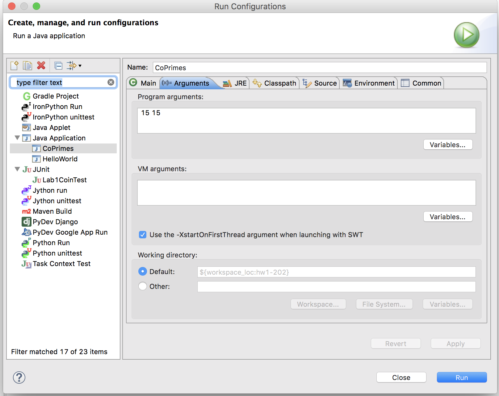

CMPT 202
Homework #1
Overview
Two numbers are said to be co-prime if their only common
factor is 1. For example, 4 and 9 are co-prime as their only common
factor is 1. However, the numbers 4 and 10 are not co-prime.
(Co-prime numbers are also referred to as relatively prime.)
This assignment will involve writing a Java program that is passed
two values M and N, and it will determine all the co-prime pairs
between (1,1) and (M,N). It will present these co-primes by
outputting them as a grid. For example, the following displays the
co-prime pairs of of M = 15 N = 15

where an asterisk represents a co-prime pair. The following image
shows the relative positions of each pair (notice that (1,1) is the
lower left-hand corner) where the blue circle is the co-prime pair
(4,9), and the yellow circle indicates (4,10) is not co-prime.

Assignment
Write a Java program that is passed two parameters representing
the pairs to generate. Use the following program as a starting
point:
- CoPrimes.java
It currently expects two parameters passed on the command line.
Using Eclipse, parameters are passed to Java programs by the
following steps:
Run As -> Run Configurations

and then

Modify CoPrimes.java so that it displays the co-primes as shown in
the above figures (that is, an '*' if the coordinates (i,j)
represent a co-prime, or a space if it is not a co-prime pair.)
Hint
Consider how the Euclidean method of determining the greatest common
divisor may be helpful at solving this problem.
Submission
Submit your implementation of CoPrimes.java to
Canvas. There is a grading
rubric on the Canvas dropbox for this assignment.